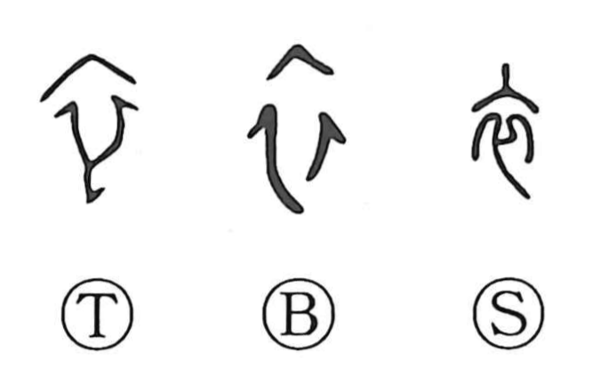

衣

Kun: koromo, kinu | On: i, e
clothes ・ garment
Explanation
A pictograph of a robe’s crossed collar. Whereas modern Japanese dress lays the left panel over the right, oracle-bone forms often show the right side in front. In early belief, garments were places where spirits would alight or rely, so 衣 evokes clothing as a vessel of numinous presence. The character 依 depicts a spirit depending on garments, and 襲 conveys succession—taking over a role by donning layered, spirit-charged robes. Many characters built from 衣, such as 哀, 袁 (the old form of 遠), 衰, and 嬛 (the old form of 還), belong to the sphere of rites for the dead, reflecting the garment’s ritual significance.